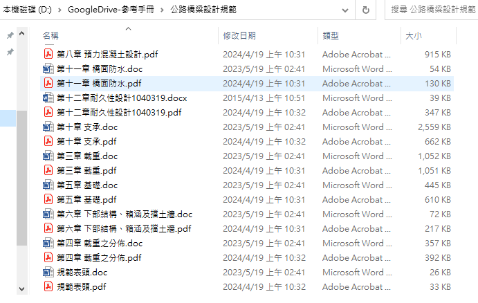
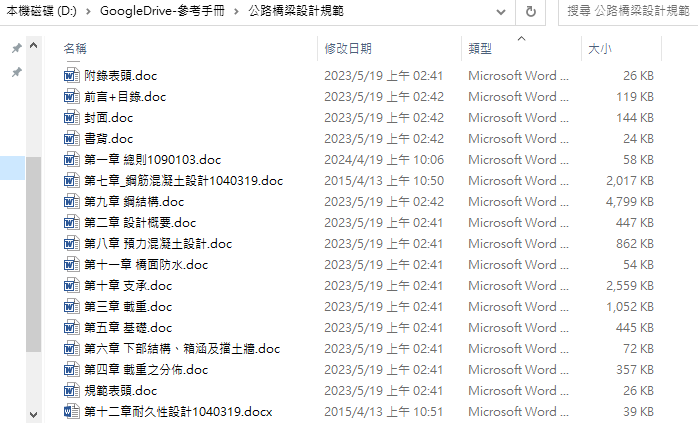

前言
交通部的部頒規範下載下來之後會變成很多細碎的檔案，包含PDF跟DOC，在進行檔案內容搜尋的時候時常需要跨檔案比對，無法在同個檔案中一次到位。
有些規範有進行修改的內容需要先修改doc後再輸出PDF，乾脆將所有PDF都先進行刪除，後續再針對資料夾批次轉檔成PDF後再做合併。
解決目標:將doc修改完畢後輸出為pdf，丟到pdf_merge中進行合併，這實在是很麻煩。
本篇介紹如何撰寫程式碼來簡化製作公路橋梁設計規範的流程，有興趣請繼續閱讀
檔案來源
原始檔案下載連結 
原始檔案下載內容 
預先處理內容 
Python的解決方案
預計使用工具為docx2pdf進行轉檔
docx2pdf
使用時所輸出的內容一直出現空白頁，而且可以接受的內容也只有docx
可能是我還沒研究透徹...?
1
2
3
4
5
6
7
8
9
10
11
12
13
14
15
16
17
18
19
20
21
22
23
24
25
26
27
28
29
30
31
|
from docx2pdf import convert
import os
def convert_docx_to_pdf(input_folder, output_folder):
if not os.path.exists(input_folder):
print("輸入文件夾不存在！")
return
os.makedirs(output_folder, exist_ok=True)
for filename in os.listdir(input_folder):
if filename.endswith(".docx") :
print(f"{filename} found")
input_path = os.path.join(input_folder, filename)
output_filename = filename.replace(".docx", ".pdf")
output_path = os.path.join(output_folder, output_filename)
convert(input_path, output_path)
print(f"{filename} 轉換完成")
if __name__ == "__main__":
input_folder = r"D:\GoogleDrive-參考手冊\公路橋梁設計規範"
output_folder = r"D:\Python\pdf_output"
convert_docx_to_pdf(input_folder, output_folder)
|
後來還是想別的辦法去轉檔。
最終選擇
身為忠臣的VBA用戶，如果能夠用VBA處理會是比較得心應手的，突然想起
Excel VBA 本身可以呼叫 Word VBA 執行PDF轉檔。
1
2
3
4
5
6
7
8
9
10
11
12
13
14
15
16
17
18
19
20
21
22
23
24
25
26
27
28
29
30
31
32
33
34
35
36
37
38
39
40
41
42
43
44
45
46
47
48
49
50
51
52
53
54
|
Sub ConvertDocToPDF()
Dim WordApp As Object
Dim WordDoc As Object
Dim FolderPath As String
Dim FileName As String
Dim PDFFileName As String
On Error Resume Next
Set WordApp = GetObject(, "Word.Application")
If WordApp Is Nothing Then
Set WordApp = CreateObject("Word.Application")
End If
On Error GoTo 0
WordApp.Visible = False
FolderPath = "D:\GoogleDrive-參考手冊\公路橋梁設計規範"
FileName = Dir(FolderPath & "\*.doc*")
Do While FileName <> ""
Set WordDoc = WordApp.Documents.Open(FolderPath & "\" & FileName)
PDFFileName = Replace(FolderPath & "\" & FileName, ".doc", ".pdf")
WordDoc.ExportAsFixedFormat OutputFileName:=PDFFileName, ExportFormat:=17
WordDoc.Close False
FileName = Dir
Loop
WordApp.Quit
Set WordDoc = Nothing
Set WordApp = Nothing
MsgBox "列印完成！"
End Sub
|
暫時結果
經過轉檔之後，原本是doc或docx的檔案都會依照原本名稱變成pdf的副檔名
下一步就是要進行pdf合併了!!
 Fig4.暫時生成結果
Fig4.暫時生成結果
列印順序
因為PDF文件的名稱不一定是我所需要的順序
希望能夠依循下列步驟
- 列出該檔案夾中的檔案名稱順序成為CSV檔案
- 根據我所指定的順序進行選取合併
生成CSV順序
1
2
3
4
5
6
7
8
9
10
11
12
13
14
15
16
17
18
19
20
21
22
23
24
25
| import os
import csv
def list_pdf_files_to_csv(input_folder, output_csv):
with open(output_csv, "w", newline='', encoding='utf-8-sig') as csv_file:
csv_writer = csv.writer(csv_file)
csv_writer.writerow(['順序','檔案名稱','檔案路徑'])
order=1
for filename in os.listdir(input_folder):
if filename.lower().endswith(".pdf"):
file_path = os.path.join(input_folder, filename)
csv_writer.writerow([order,filename, file_path])
order += 1
if __name__ == "__main__":
input_folder =r"D:\GoogleDrive-參考手冊\公路橋梁設計規範"
output_csv = r"D:\Python\pdf_doc\pdf_files.csv"
list_pdf_files_to_csv(input_folder, output_csv)
|
生成之後可以藉由Excel的幫助進行順序排序，再另存為csv檔案的格式就可以備用。
根據CSV順序進行合併
1
2
3
4
5
6
7
8
9
10
11
12
13
14
15
16
17
18
19
20
21
22
23
24
25
26
27
28
29
30
31
32
33
34
35
36
37
38
39
40
41
42
43
44
45
46
47
| import os
import csv
from PyPDF2 import PdfMerger
def read_csv_to_pdf_files(csv_file):
pdf_files = []
with open(csv_file, "r", newline='',encoding='utf-8-sig') as file:
reader = csv.reader(file)
next(reader)
for row in reader:
order = row[0]
filename = row[1]
pdf_path = row[2]
pdf_files.append((order, filename, pdf_path))
return pdf_files
def merge_pdfs_directly(pdf_files,output_folder):
merger = PdfMerger()
for order, filename,pdf_path in pdf_files:
merger.append(pdf_path)
os.makedirs(output_folder, exist_ok=True)
output_path = os.path.join(output_folder, "merged_pdf.pdf")
merger.write(output_path)
merger.close()
if __name__ == "__main__":
csv_file = r"D:\Python\pdf_doc\pdf_files.csv"
pdf_files = read_csv_to_pdf_files(csv_file)
output_folder = r"D:\Python\pdf_doc"
merge_pdfs_directly(pdf_files,output_folder)
|
最終成果
開發過程的問題
操作CSV的過程曾經出現一些奇怪的問題，記錄一下比較不會忘記
檔案名稱為中文，要收集匯入csv檔案的時會變成亂碼
需要將編碼由utf-8改為utf-8-sig
1
| with open(output_csv, "w", newline='', encoding='utf-8-sig') as csv_file:
|
CSDN參考
要將CSV的內容匯入到python進行後續運用時會出現'UnicodeDecodeError'
將原本的讀取內容中的encoding換成
errors='replace' 即可
1
2
3
4
| with open('some.csv', newline='', encoding='utf-8') as f:
reader = csv.reader(f)
for row in reader:
print(row)
|
1
2
3
4
| with open('some.csv', newline='', errors='replace') as f:
reader = csv.reader(f)
for row in reader:
print(row)
|
Stack
overflow參考資料
開啟一個全新的環境，要將CSV的內容匯入到python進行後續運用時會出現
1
| FileNotFoundError: [Errno 2] No such file or directory: 'D:\\GoogleDrive-������������\\��祈楝璈�璇�閮剛��閬� 蝭�\\蝚砌��蝡� 蝮賢��1090103.pdf
|
原本第二點可以解決編譯問題的程式碼調整 errors='replace'
已經無法作用，我把encoding='utf-8-sig'重新加上去，然後就好了(?)
猜測是新的環境中還沒有預設的encoding，所以中文還沒有辦法被知道要怎麼編譯。
1
2
3
4
| with open('some.csv', newline='', encoding='utf-8-sig') as f:
reader = csv.reader(f)
for row in reader:
print(row)
|